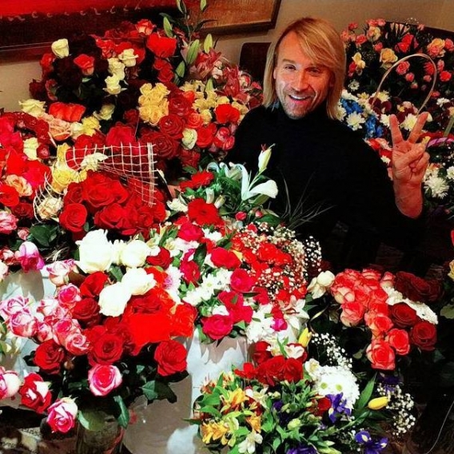

2
7
ОЛЕГ ВИННИК - Популярный украинский певец и покоритель женских сердец ухватил кусочек славы не только в Украине, но и Германии. За ним охотились многие зарубежные педагоги по вокалу, но достался он самому Джону Леману. Олег Винник довольно скрытный человек, редко дает интервью и тщательно охраняет свою личную жизнь от журналистов.
Профессия Певец
Дата рождения 31 июля 1973
Рост и вес 175 см и 74 кг
В Германии Олег Винник всерьез занимался бодибилдингом, но был вынужден прекратить тренировки из-за роли Жана Вальжана, чтобы не смущать зрителей своими накаченными бицепсами. Вернувшись в родную Украину, певец не прекратил концертную деятельность в Германии.

После окончания училища, Олег поступил на работу в Черкасскую филармонию, где в 20 лет одаренный юноша стал ее солистом. В рамках программы культурного обмена Винник проходил стажировку в Германии, где по некоторым данным сначала работал гувернеров в одной из семей, учил немецкий язык, а уже потом с подачи своей подружки решился попробовать в свои силы в Люнебургском театре.
Певец начал исполнять основные партии практически во всех крупных спектаклях: «Тоска», «Паганини», «Олег», «Поцелуй меня, Кейт!», «Собор Парижской Богоматери», «Титани», «Отверженные» и других. Несмотря на казалось бы идеальные вокальные способности, Олег продолжал учиться и не отказался от уроков по вокалу американского преподавателя Джона Лемана.